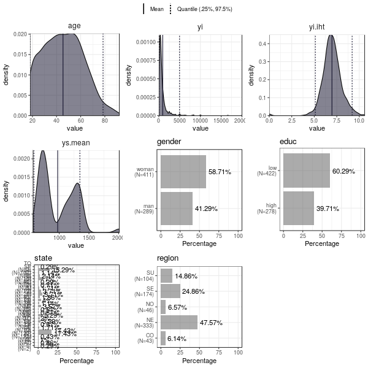
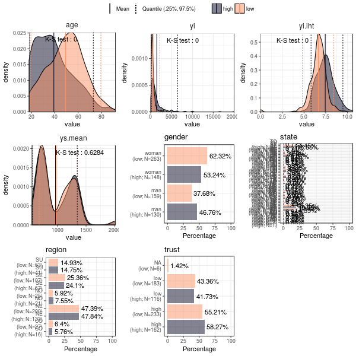
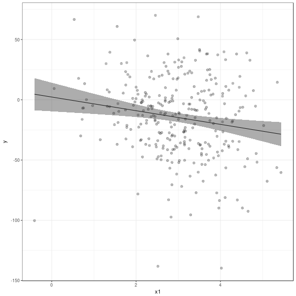
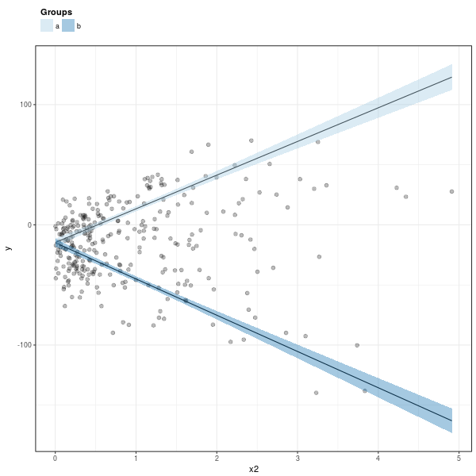
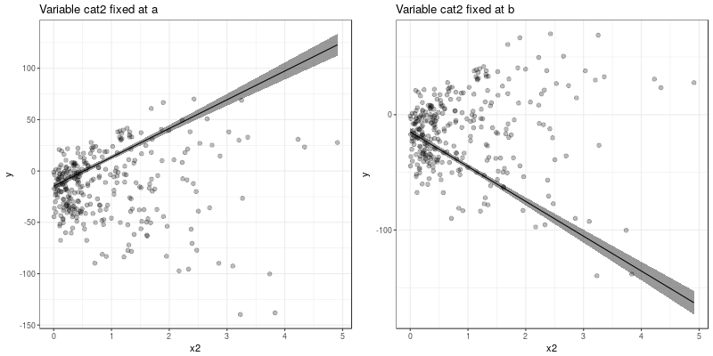
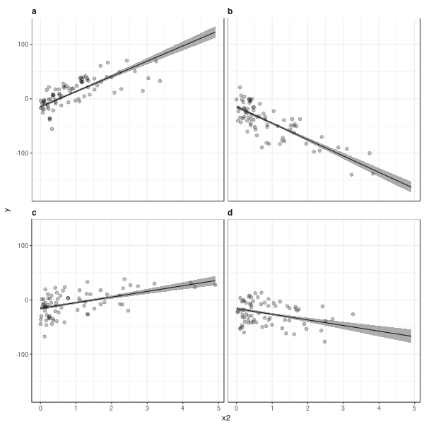
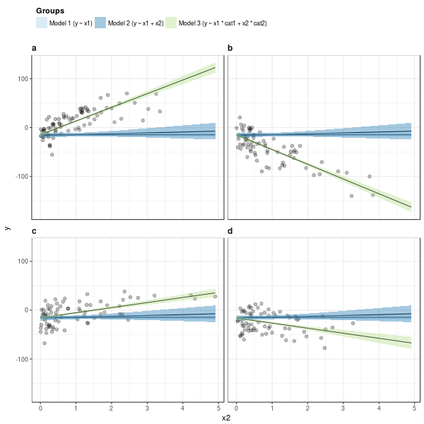
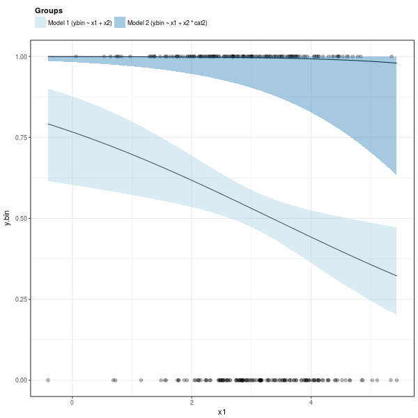
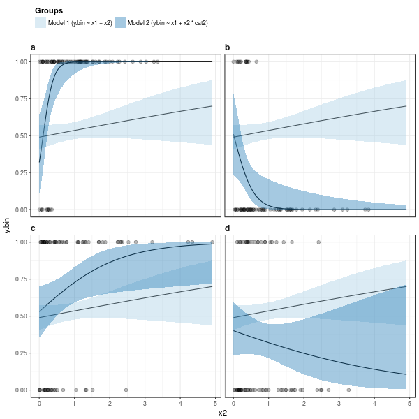
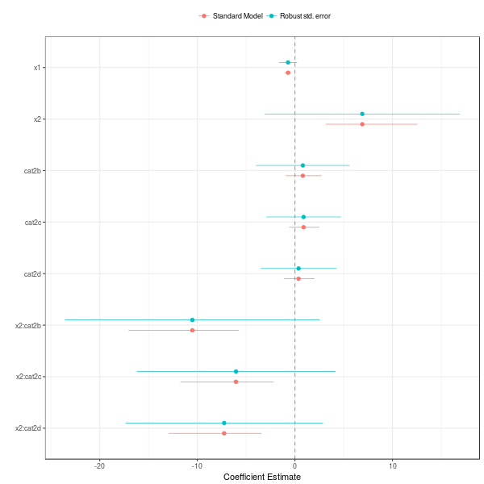

Exploratory Data Analysis in R (edar)
Table of Contents
1 Introduction
The package Exploratory Data Analysis in R (edar) allows efficient exploratory data analyses with few lines of code. It contains some functions to:
- overview and summarise the data set
- check balance of covariates among control and treatment groups
- create organized and ready to export (to latex, html, etc) tables with results of model estimation
- easily create plots with fitted values comparing one or more models under different treatment conditions
- create plots with point estimates and their intervals (dotwisker plots)
conduct robustness checks of the model results (multiple imputation, post-stratification, etc).
Quantitative researchers conduct those tasks repeatedly. The package provides functions to do them more efficiency and with minimum code.
- Check the numerical and categorical variables of the data set
- Look for outliers and missing values
- Check distribution of the variables
- Fit a multivariate regression model
- Display and check the results
- Do multiple imputation and post-stratification (in surveys)
- Repeat 2 and 3
- Recode some Variables or change model specifications
- Repeat
Execpt for item 6, the package edar can spead up all those tasks. For instance, suppose data contains the data set. Those tasks can be performed with few lines of code:
# summary tables data %>% summarise_alln(.) # summarise all numerical variables of the data in a table data %>% summarise_allc(.) # summarise all categorical variables of the data in a table data %>% summarise_allcbundle(.) # summarise all categorical variables of the data in a table data %>% ebalance(., treatmentVar="treat") ## summary of numerical variables for different levels of "treat" # summary plots s %>% gge_describe(.) ## marginal distribution of all variables s %>% gge_density(.) ## marginal distribution of numerical variables only s %>% gge_histogram(.)## marginal distribution of numerical variables only using histograms s %>% gge_barplot(.) ## marginal distribution of non-numerical variables # afeter fitting the models model1, model2, etc ... tidye(model1, hc=T) ## summarise put summary in a tidy data.frame (using robust std.errors) tidye(list(model1,model2)) ## same, but summarise both models at once # plots gge_coef(model1) ## dotwisker plot (plot with coefficients and std. errors) model %>% gge_fit(., data, "y", "x1") ## plot with fitted values as function of covariate x1 # multiple imputation and post-stratification emultimputation(data, formula, dep.vars = c(...), ind.vars=c(...)) epoststrat(data, population.proportion, strata = ~ stratification.variable1 + stratification.variable2...)
2 Workflow
2.1 Data
Here is an example of workflow with edar. We will use the data set edar_survey that comes with the package:
library(magrittr) library(edar) data(edar_survey) help(edar_survey) data = edar_survey
A National Survey from Brazil
Description:
The data set is a subset of a national suvery conducted in Brazil
in 2013. The survey measures preferences of individuals for
interpersonal and interregional redistribution of income as well
as preferences for centralization of political authority.
Usage:
data(edar_survey)
Format:
A data frame with 700 rows and 16 columns:
gender factor with "men" and "woman"
educ factor with "high" if the individual completed high school or
more, and "low" otherwise
age integer with age in years
yi numeric variable with household income per capita
yi.iht inverse hyperbolic transformation of yi
state factor with the state in which the individual lives
region factor with macroregion
ys.mean average household percapita income in the state, computed
using the 2013 Brazilian National Household Survey (PNAD)
trust factor, "high" or "low" trust in the federal government
treat numeric, 0 for control group or 1 for treatment group. It is
a randomly generated variable for used for ilustration of the
examples and vignettes only
ys.gini numeric, Gini coefficient of the state computed using the
2013 Brazilian National Household Survey (PNAD)
racial.frag.ratio numeric, racial fractionalization at the state
over racial fractionalization at the national level
reduce.income.gap factor, "A"=Agree, "A+"=Strongly Agree,
"D"=Disagree, "D+"=Strongly Disagree, "N"=Neither Agree or
Disagree that "Government should reduce income gap between
rich and poor"
transfer.state.tax factor, "A"=Agree, "A+"=Strongly Agree,
"D"=Disagree, "D+"=Strongly Disagree, "N"=Neither Agree or
Disagree that the "Government should redistribute resources
from rich to poor states"
minimum.wage factor, captures the answer to "Who should decide
about the minimum wage policy?". The levels are "Each city
should decide", "Each state should decide", "Should be the
same accros the country"
unemployment.policy factor, captures the answer to "Who should
decide about the unemployment policy?". The levels are "Each
city should decide", "Each state should decide", "Should be
the same accros the country"
red.to.poor factor, captures the answer to "Who should decide
about policies to redistribute income to poor?". The levels
are "Each city should decide", "Each state should decide",
"Should be the same accros the country"
Source:
<URL: http://web.fflch.usp.br/centrodametropole/>
2.2 Summary tables
First, we can have a quick overview of the data set using the functions summarise_alln and summarise_allc provided by edar package. They show the summary of numerical and categorical variables in the data set, respectively:
data %>% summarise_alln(., digits=2)
# A tibble: 10 x 7 var N NAs Categories Frequency Table Categories.Labels <chr> <dbl> <int> <int> <chr> <list> <chr> 1 educ 700 0 2 high (39.71 %), low (6… <data… high, low 2 gender 700 0 2 man (41.29 %), woman (5… <data… man, woman 3 minimum.wage 695 5 4 Each (8.63 %), Each (16… <data… Each city should d… 4 red.to.poor 679 21 4 Each (11.78 %), Each (1… <data… Each city should d… 5 reduce.income.gap 700 0 5 A (72.43 %), A+ (1… <data… A, A+, D, D+, N 6 region 700 0 5 CO (6.14 %), NE (47… <data… CO, NE, NO, SE, SU 7 state 700 0 27 AC (0.29 %), AL (0.… <data… AC, AL, AM, AP, BA… 8 transfer.state.tax 700 0 5 A (70.14 %), A+ (1… <data… A, A+, D, D+, N 9 trust 694 6 3 high (56.92 %), low (4… <data… high, low 10 unemployment.policy 699 1 4 Each (9.59 %), Each (17… <data… Each city should d…
data %>% summarise_allc(.)
# A tibble: 10 x 7 var N NAs Categories Frequency Table Categories.Labels <chr> <dbl> <int> <int> <chr> <list> <chr> 1 educ 700 0 2 high (39.71 %), low (6… <data… high, low 2 gender 700 0 2 man (41.29 %), woman (5… <data… man, woman 3 minimum.wage 695 5 4 Each (8.63 %), Each (16… <data… Each city should d… 4 red.to.poor 679 21 4 Each (11.78 %), Each (1… <data… Each city should d… 5 reduce.income.gap 700 0 5 A (72.43 %), A+ (1… <data… A, A+, D, D+, N 6 region 700 0 5 CO (6.14 %), NE (47… <data… CO, NE, NO, SE, SU 7 state 700 0 27 AC (0.29 %), AL (0.… <data… AC, AL, AM, AP, BA… 8 transfer.state.tax 700 0 5 A (70.14 %), A+ (1… <data… A, A+, D, D+, N 9 trust 694 6 3 high (56.92 %), low (4… <data… high, low 10 unemployment.policy 699 1 4 Each (9.59 %), Each (17… <data… Each city should d…
The summary of categorical variables produced by summarise_allc contains a column named Table, which contains a table with the counts for each category value of the variable.
tab = data %>% summarise_allc(.) tab$Table[[6]]
| Variable | CO | NE | NO | SE | SU | NA |
|---|---|---|---|---|---|---|
| region | 43 | 333 | 46 | 174 | 104 | 0 |
It is common to have data sets in which many categorical variables have the same categories. The function summarise_allcbundle provides a summary of all categorical variables of the data set and aggregate those with same categories. The output contain columns named Table, Tablep, and Tablel. Table contains a table with counts of the categories of the variables. Tablep presents the same information, but in percentage. Tablel presents both the counts and percentage, which can be exported directly for reports and articles. The column Variables in the output contains the name of all the variables that have the same Category.Labels
data %>% summarise_allcbundle(.)
# A tibble: 6 x 6
N.Variables Variables Categories.Labels Table Tablep Tablel
<int> <list> <chr> <list> <list> <list>
1 2 <chr [2]> A, A+, D, D+, N <data.fra… <data.fra… <data.fra…
2 1 <chr [1]> AC, AL, AM, AP, BA, CE, DF, ES, GO, MA, M… <data.fra… <data.fra… <data.fra…
3 1 <chr [1]> CO, NE, NO, SE, SU <data.fra… <data.fra… <data.fra…
4 3 <chr [3]> Each city should decide, Each state shoul… <data.fra… <data.fra… <data.fra…
5 2 <chr [2]> high, low <data.fra… <data.fra… <data.fra…
6 1 <chr [1]> man, woman <data.fra… <data.fra… <data.fra…
tab = data %>% summarise_allcbundle(.) tab$Table[[5]]
| Variable | high | low | NA |
|---|---|---|---|
| educ | 278 | 422 | 0 |
| trust | 395 | 299 | 6 |
tab$Tablep[[5]]
| Variable | high | low | NA |
|---|---|---|---|
| educ | 39.71 | 60.29 | 0 |
| trust | 56.43 | 42.71 | 0.86 |
tab$Tablel[[5]]
| Variable | high | low | NA |
|---|---|---|---|
| educ | 39.71 % (N=278) | 60.29 % (N=422) | 0 % (N=0) |
| trust | 56.43 % (N=395) | 42.71 % (N=299) | 0.86 % (N=6) |
2.3 Checking balance of covariates
We can easily check the distribution of covariates among two factor levels. Consider the variable treat, which represents the treatment condition (1=treatment, 0=control). We can describe the distribution of covariates using ebalance(). The table follows recomendations in imbens2015causal.
data %>% ebalance(., treatmentVar='treat') %>% print(., digits=2)
| Variable | mut | st | muc | sc | NorDiff | lnRatioSdtDev | pit | pic |
|---|---|---|---|---|---|---|---|---|
| age | 45.83 | 16.61 | 44.9 | 16.27 | 0.06 | 0.02 | 0.03 | 0.06 |
| yi | 946.36 | 1671.84 | 916.04 | 1418.32 | 0.02 | 0.16 | 0.03 | 0.07 |
| yi.iht | 6.95 | 1.07 | 6.98 | 1.08 | -0.03 | -0.01 | 0.03 | 0.07 |
| ys.mean | 981.54 | 297.97 | 966.04 | 302.6 | 0.05 | -0.02 | 0.04 | 0.02 |
| ys.gini | 0.52 | 0.03 | 0.53 | 0.03 | -0.16 | -0.1 | 0.03 | 0.05 |
| racial.frag.ratio | 0.87 | 0.13 | 0.87 | 0.14 | 0.02 | -0.07 | 0 | 0.05 |
| MahalanobisDist | nil | nil | nil | nil | 0.22 | nil | nil | nil |
| pscore | 0.5 | 0.5 | 0.46 | 0.5 | 0.07 | 0 | 0.02 | 0.04 |
| LinPscore | -0.09 | 26.61 | -1.92 | 26.54 | 0.07 | 0 | 0.04 | 0.07 |
| N | 337 | nil | 363 | nil | nil | nil | nil | nil |
2.4 Summary plots
The package also provides some functions to easily visualise the marginal distribution of many variables at once. The marginal densities can be grouped by factors using the parameter group. When the marginal densities are presented by group, the plot include the p-value of the Kolmogorov-Smirnov distance.
g = data[,1:8] %>% gge_describe(.) print(g)

g = data[,1:9] %>% gge_describe(., group='educ') print(g)

Other similar functions provided by the package are:
- gge_barplot()
- gge_density()
- gge_histogram()
- gge_barplot()
2.5 Analyzing output of model estimation
2.5.1 Fitting models
The package edar make it easy to display results of estimation. It can be achieved with minimum code. Suppose we estimated five different models:
set.seed(77) data = tibble::data_frame(n = 300, x1 = rnorm(n,3,1), x2 = rexp(n), cat1 = sample(c(0,1), n, replace=T), cat2 = sample(letters[1:4], n, replace=T), y = -10*x1*cat1 + 10*x2*(3*(cat2=='a') -3*(cat2=='b') +1*(cat2=='c') -1*(cat2=='d')) + rnorm(n,0,10), y.bin = ifelse(y < mean(y), 0, 1), y.mul = 1+ifelse( - x1 - x2 + rnorm(n,sd=10) < 0, 0, ifelse( - 2*x2 + rnorm(n,sd=10) < 0, 1, 2)), ) formula1 = y ~ x1 formula2 = y ~ x1 + x2 formula3 = y ~ x1*cat1 + x2*cat2 formula4bin = y.bin ~ x1+x2*cat2 formula4bin1 = y.bin ~ x1+x2 formula4bin2 = y.bin ~ x1*cat1+x2*cat2 formula5mul = y.mul ~ x1 + x2 model.g1 = lm(formula1, data) model.g2 = lm(formula2, data) model.g3 = lm(formula3, data) model.bin = glm(formula4bin, data=data, family='binomial') model.bin1 = glm(formula4bin, data=data, family='binomial') model.bin2 = glm(formula4bin, data=data, family='binomial') model.mul = nnet::multinom(formula5mul, data)
2.5.2 Tables
We want to vizualize the model estimate. The function tidye creates tidy summary tables with the output. It is a wrap function for broom::tidy(), and it works with list of models. Here are some examples:
tidye(model.g3) ## works with other types of dependent variables # tidye(model.bin) # tidye(model.mul)
| term | estimate | std.error | conf.low | conf.high | statistic | p.value |
|---|---|---|---|---|---|---|
| (Intercept) | 3.6042 | 3.0375 | -2.3742 | 9.5826 | 1.1866 | 0.2364 |
| x1 | -0.9053 | 0.8167 | -2.5126 | 0.7021 | -1.1085 | 0.2686 |
| cat1 | -2.2011 | 3.6151 | -9.3164 | 4.9142 | -0.6089 | 0.5431 |
| x2 | 28.0061 | 1.3544 | 25.3403 | 30.6719 | 20.6774 | 0 |
| cat2b | -0.1835 | 2.3532 | -4.8151 | 4.4481 | -0.078 | 0.9379 |
| cat2c | -0.9414 | 2.2746 | -5.4184 | 3.5355 | -0.4139 | 0.6793 |
| cat2d | -1.4556 | 2.4636 | -6.3044 | 3.3932 | -0.5909 | 0.5551 |
| x1:cat1 | -9.2755 | 1.1527 | -11.5442 | -7.0069 | -8.0471 | 0 |
| x2:cat2b | -58.1667 | 1.8639 | -61.8352 | -54.4982 | -31.2071 | 0 |
| x2:cat2c | -17.6127 | 1.7246 | -21.0071 | -14.2183 | -10.2125 | 0 |
| x2:cat2d | -38.3783 | 2.0687 | -42.4499 | -34.3068 | -18.5523 | 0 |
We can have robust standard errors, and keep or not information of non-corrected values for comparison.
## with robust std.errors tidye(model.g3, hc=T)
| term | estimate | std.error | conf.low | conf.high | statistic | p.value |
|---|---|---|---|---|---|---|
| (Intercept) | 3.6042 | 3.2952 | -2.8544 | 10.0628 | 1.0938 | 0.275 |
| x1 | -0.9053 | 0.8481 | -2.5676 | 0.7571 | -1.0673 | 0.2867 |
| cat1 | -2.2011 | 3.7761 | -9.6023 | 5.2001 | -0.5829 | 0.5604 |
| x2 | 28.0061 | 1.5784 | 24.9124 | 31.0998 | 17.7432 | 0 |
| cat2b | -0.1835 | 2.5577 | -5.1965 | 4.8295 | -0.0717 | 0.9429 |
| cat2c | -0.9414 | 2.4039 | -5.6531 | 3.7703 | -0.3916 | 0.6956 |
| cat2d | -1.4556 | 2.691 | -6.7299 | 3.8187 | -0.5409 | 0.589 |
| x1:cat1 | -9.2755 | 1.2346 | -11.6953 | -6.8558 | -7.5131 | 0 |
| x2:cat2b | -58.1667 | 1.8969 | -61.8846 | -54.4488 | -30.664 | 0 |
| x2:cat2c | -17.6127 | 1.8342 | -21.2077 | -14.0176 | -9.6023 | 0 |
| x2:cat2d | -38.3783 | 2.3255 | -42.9364 | -33.8203 | -16.5029 | 0 |
tidye(model.g3, hc=T, keep.nohc=T) # keep no heterocedastic corrected std.errors
| term | estimate | std.error | conf.low | conf.high | statistic | p.value | std.error.nohc | statistic.nohc | p.value.nohc | conf.low.nohc | conf.high.nohc |
|---|---|---|---|---|---|---|---|---|---|---|---|
| (Intercept) | 3.6042 | 3.2952 | -2.8544 | 10.0628 | 1.0938 | 0.275 | 3.0375 | 1.1866 | 0.2364 | -2.3742 | 9.5826 |
| x1 | -0.9053 | 0.8481 | -2.5676 | 0.7571 | -1.0673 | 0.2867 | 0.8167 | -1.1085 | 0.2686 | -2.5126 | 0.7021 |
| cat1 | -2.2011 | 3.7761 | -9.6023 | 5.2001 | -0.5829 | 0.5604 | 3.6151 | -0.6089 | 0.5431 | -9.3164 | 4.9142 |
| x2 | 28.0061 | 1.5784 | 24.9124 | 31.0998 | 17.7432 | 0 | 1.3544 | 20.6774 | 0 | 25.3403 | 30.6719 |
| cat2b | -0.1835 | 2.5577 | -5.1965 | 4.8295 | -0.0717 | 0.9429 | 2.3532 | -0.078 | 0.9379 | -4.8151 | 4.4481 |
| cat2c | -0.9414 | 2.4039 | -5.6531 | 3.7703 | -0.3916 | 0.6956 | 2.2746 | -0.4139 | 0.6793 | -5.4184 | 3.5355 |
| cat2d | -1.4556 | 2.691 | -6.7299 | 3.8187 | -0.5409 | 0.589 | 2.4636 | -0.5909 | 0.5551 | -6.3044 | 3.3932 |
| x1:cat1 | -9.2755 | 1.2346 | -11.6953 | -6.8558 | -7.5131 | 0 | 1.1527 | -8.0471 | 0 | -11.5442 | -7.0069 |
| x2:cat2b | -58.1667 | 1.8969 | -61.8846 | -54.4488 | -30.664 | 0 | 1.8639 | -31.2071 | 0 | -61.8352 | -54.4982 |
| x2:cat2c | -17.6127 | 1.8342 | -21.2077 | -14.0176 | -9.6023 | 0 | 1.7246 | -10.2125 | 0 | -21.0071 | -14.2183 |
| x2:cat2d | -38.3783 | 2.3255 | -42.9364 | -33.8203 | -16.5029 | 0 | 2.0687 | -18.5523 | 0 | -42.4499 | -34.3068 |
Finally, we can create tables with list of models.
## list of models tidye(list(Gaussian=model.g3, Binomial=model.bin, Multinomial=model.mul)) %>% print(., n=Inf)
| y.multin.cat | model | term | estimate | std.error | conf.low | conf.high | statistic | p.value |
|---|---|---|---|---|---|---|---|---|
| nil | Gaussian | (Intercept) | 3.6042 | 3.0375 | -2.3742 | 9.5826 | 1.1866 | 0.2364 |
| nil | Gaussian | x1 | -0.9053 | 0.8167 | -2.5126 | 0.7021 | -1.1085 | 0.2686 |
| nil | Gaussian | cat1 | -2.2011 | 3.6151 | -9.3164 | 4.9142 | -0.6089 | 0.5431 |
| nil | Gaussian | x2 | 28.0061 | 1.3544 | 25.3403 | 30.6719 | 20.6774 | 0 |
| nil | Gaussian | cat2b | -0.1835 | 2.3532 | -4.8151 | 4.4481 | -0.078 | 0.9379 |
| nil | Gaussian | cat2c | -0.9414 | 2.2746 | -5.4184 | 3.5355 | -0.4139 | 0.6793 |
| nil | Gaussian | cat2d | -1.4556 | 2.4636 | -6.3044 | 3.3932 | -0.5909 | 0.5551 |
| nil | Gaussian | x1:cat1 | -9.2755 | 1.1527 | -11.5442 | -7.0069 | -8.0471 | 0 |
| nil | Gaussian | x2:cat2b | -58.1667 | 1.8639 | -61.8352 | -54.4982 | -31.2071 | 0 |
| nil | Gaussian | x2:cat2c | -17.6127 | 1.7246 | -21.0071 | -14.2183 | -10.2125 | 0 |
| nil | Gaussian | x2:cat2d | -38.3783 | 2.0687 | -42.4499 | -34.3068 | -18.5523 | 0 |
| nil | Binomial | (Intercept) | 1.3429 | 0.8402 | -0.3366 | 2.9946 | 1.5982 | 0.11 |
| nil | Binomial | x1 | -0.7064 | 0.1766 | -1.0668 | -0.3716 | -3.9992 | 0.0001 |
| nil | Binomial | x2 | 6.8998 | 2.4031 | 3.1397 | 12.5526 | 2.8712 | 0.0041 |
| nil | Binomial | cat2b | 0.8125 | 0.9307 | -0.9529 | 2.7251 | 0.8731 | 0.3826 |
| nil | Binomial | cat2c | 0.8889 | 0.7803 | -0.5932 | 2.5013 | 1.1392 | 0.2546 |
| nil | Binomial | cat2d | 0.3712 | 0.7899 | -1.1366 | 1.9951 | 0.47 | 0.6384 |
| nil | Binomial | x2:cat2b | -10.5099 | 2.8835 | -17.0461 | -5.7408 | -3.6449 | 0.0003 |
| nil | Binomial | x2:cat2c | -6.0388 | 2.4337 | -11.7324 | -2.172 | -2.4813 | 0.0131 |
| nil | Binomial | x2:cat2d | -7.2537 | 2.4283 | -12.9408 | -3.4126 | -2.9872 | 0.0028 |
| 2 | Multinomial | (Intercept) | -0.9266 | 0.4976 | -1.9018 | 0.0487 | -1.8621 | 0.0626 |
| 2 | Multinomial | x1 | -0.0099 | 0.1505 | -0.3048 | 0.285 | -0.0657 | 0.9477 |
| 2 | Multinomial | x2 | -0.2114 | 0.1776 | -0.5596 | 0.1367 | -1.1902 | 0.234 |
| 3 | Multinomial | (Intercept) | -0.5612 | 0.5229 | -1.586 | 0.4636 | -1.0734 | 0.2831 |
| 3 | Multinomial | x1 | -0.2168 | 0.1646 | -0.5393 | 0.1058 | -1.3173 | 0.1877 |
| 3 | Multinomial | x2 | -0.24 | 0.1995 | -0.6311 | 0.151 | -1.203 | 0.229 |
It can easily be exported to standard publication format using the package kable or the function etab() provided by edar
tidye(list(Gaussian=model.g3, Binomial=model.bin, Multinomial=model.mul)) %>% kableExtra::kable(., "html", booktabs = T ) %>% kableExtra::kable_styling(bootstrap_options = c("striped", "hover", "condensed"))
| y.multin.cat | model | term | estimate | std.error | conf.low | conf.high | statistic | p.value |
|---|---|---|---|---|---|---|---|---|
| NA | Gaussian | (Intercept) | 3.6042 | 3.0375 | -2.3742 | 9.5826 | 1.1866 | 0.2364 |
| NA | Gaussian | x1 | -0.9053 | 0.8167 | -2.5126 | 0.7021 | -1.1085 | 0.2686 |
| NA | Gaussian | cat1 | -2.2011 | 3.6151 | -9.3164 | 4.9142 | -0.6089 | 0.5431 |
| NA | Gaussian | x2 | 28.0061 | 1.3544 | 25.3403 | 30.6719 | 20.6774 | 0.0000 |
| NA | Gaussian | cat2b | -0.1835 | 2.3532 | -4.8151 | 4.4481 | -0.0780 | 0.9379 |
| NA | Gaussian | cat2c | -0.9414 | 2.2746 | -5.4184 | 3.5355 | -0.4139 | 0.6793 |
| NA | Gaussian | cat2d | -1.4556 | 2.4636 | -6.3044 | 3.3932 | -0.5909 | 0.5551 |
| NA | Gaussian | x1:cat1 | -9.2755 | 1.1527 | -11.5442 | -7.0069 | -8.0471 | 0.0000 |
| NA | Gaussian | x2:cat2b | -58.1667 | 1.8639 | -61.8352 | -54.4982 | -31.2071 | 0.0000 |
| NA | Gaussian | x2:cat2c | -17.6127 | 1.7246 | -21.0071 | -14.2183 | -10.2125 | 0.0000 |
| NA | Gaussian | x2:cat2d | -38.3783 | 2.0687 | -42.4499 | -34.3068 | -18.5523 | 0.0000 |
| NA | Binomial | (Intercept) | 1.3429 | 0.8402 | -0.3366 | 2.9946 | 1.5982 | 0.1100 |
| NA | Binomial | x1 | -0.7064 | 0.1766 | -1.0668 | -0.3716 | -3.9992 | 0.0001 |
| NA | Binomial | x2 | 6.8998 | 2.4031 | 3.1397 | 12.5526 | 2.8712 | 0.0041 |
| NA | Binomial | cat2b | 0.8125 | 0.9307 | -0.9529 | 2.7251 | 0.8731 | 0.3826 |
| NA | Binomial | cat2c | 0.8889 | 0.7803 | -0.5932 | 2.5013 | 1.1392 | 0.2546 |
| NA | Binomial | cat2d | 0.3712 | 0.7899 | -1.1366 | 1.9951 | 0.4700 | 0.6384 |
| NA | Binomial | x2:cat2b | -10.5099 | 2.8835 | -17.0461 | -5.7408 | -3.6449 | 0.0003 |
| NA | Binomial | x2:cat2c | -6.0388 | 2.4337 | -11.7324 | -2.1720 | -2.4813 | 0.0131 |
| NA | Binomial | x2:cat2d | -7.2537 | 2.4283 | -12.9408 | -3.4126 | -2.9872 | 0.0028 |
| Category 2 | Multinomial | (Intercept) | -0.9266 | 0.4976 | -1.9018 | 0.0487 | -1.8621 | 0.0626 |
| Category 2 | Multinomial | x1 | -0.0099 | 0.1505 | -0.3048 | 0.2850 | -0.0657 | 0.9477 |
| Category 2 | Multinomial | x2 | -0.2114 | 0.1776 | -0.5596 | 0.1367 | -1.1902 | 0.2340 |
| Category 3 | Multinomial | (Intercept) | -0.5612 | 0.5229 | -1.5860 | 0.4636 | -1.0734 | 0.2831 |
| Category 3 | Multinomial | x1 | -0.2168 | 0.1646 | -0.5393 | 0.1058 | -1.3173 | 0.1877 |
| Category 3 | Multinomial | x2 | -0.2400 | 0.1995 | -0.6311 | 0.1510 | -1.2030 | 0.2290 |
list(Binomial=model.bin, Multinomial=model.mul,Gaussian=model.g3) %>% etab
| Covariate | Binomial | Gaussian | Multinomial Category 2 | Multinomial Category 3 |
|---|---|---|---|---|
| (Intercept) | 1.3429 | 3.6042 | -0.9266 | -0.5612 |
| (-0.3366, 2.9946) | (-2.3742, 9.5826) | (-1.9018, 0.0487) | (-1.586, 0.4636) | |
| x1 | -0.7064 | -0.9053 | -0.0099 | -0.2168 |
| (-1.0668, -0.3716) | (-2.5126, 0.7021) | (-0.3048, 0.285) | (-0.5393, 0.1058) | |
| x2 | 6.8998 | 28.0061 | -0.2114 | -0.24 |
| (3.1397, 12.5526) | (25.3403, 30.6719) | (-0.5596, 0.1367) | (-0.6311, 0.151) | |
| cat1 | -2.2011 | |||
| (-9.3164, 4.9142) | ||||
| cat2b | 0.8125 | -0.1835 | ||
| (-0.9529, 2.7251) | (-4.8151, 4.4481) | |||
| cat2c | 0.8889 | -0.9414 | ||
| (-0.5932, 2.5013) | (-5.4184, 3.5355) | |||
| cat2d | 0.3712 | -1.4556 | ||
| (-1.1366, 1.9951) | (-6.3044, 3.3932) | |||
| x1:cat1 | -9.2755 | |||
| (-11.5442, -7.0069) | ||||
| x2:cat2b | -10.5099 | -58.1667 | ||
| (-17.0461, -5.7408) | (-61.8352, -54.4982) | |||
| x2:cat2c | -6.0388 | -17.6127 | ||
| (-11.7324, -2.172) | (-21.0071, -14.2183) | |||
| x2:cat2d | -7.2537 | -38.3783 | ||
| (-12.9408, -3.4126) | (-42.4499, -34.3068) |
2.5.3 Plot fitted values
After the estimation a good way to visualize and present marginal effects are plots with fitted values. It is easy to do with edar package.
model.g1 %>% gge_fit(., data, 'y', "x1")

There are many options avaiable with the gge_fit() function. We can at once:
- Compare fitted values for different groups
- Compare fitted values for different model specifications, given a list of models
- Create a grid of plots with fitted values for different groups and model specifications
- Fitted values for different groups
model.g3 %>% gge_fit(., data, 'y', "x2", cat.values=list(cat2=c('a',"b")))

g1 = model.g3 %>% gge_fit(., data, 'y', "x2", cat.values=list(cat2=c('a')), title='Variable cat2 fixed at a') g2 = model.g3 %>% gge_fit(., data, 'y', "x2", cat.values=list(cat2=c('b')), title='Variable cat2 fixed at b') ggpubr::ggarrange(g1,g2)

model.g3 %>% gge_fit(., data, 'y', "x2", facets='cat2' )

model.g3 %>% edar::gge_fit(., data, 'y', 'x1', facets='cat2', pch.col.cat='cat1', pch.col.palette=c(brewer="Set2"))

We can also compare a list of models
formulas = list("Model 1" = formula1, "Model 2" = formula2, "Model 3" = formula3) models = list("Model 1" = model.g1, "Model 2" = model.g2, "Model 3" = model.g3) models %>% gge_fit(., data, "y", "x2", formulas)

formulas = list("Model 1" = formula1, "Model 2" = formula2, "Model 3" = formula3) models = list("Model 1" = model.g1, "Model 2" = model.g2, "Model 3" = model.g3) models %>% gge_fit(., data, "y", "x2", formulas, legend.ncol.fill=3, facets='cat2')
The same applies for logistic regressions.
formula.bin1 = y.bin ~ x1+x2 formula.bin2 = y.bin ~ x1+x2*cat2 model.bin1 = glm(formula.bin1, data=data, family='binomial') model.bin2 = glm(formula.bin2, data=data, family='binomial') formulas = list("Model 1" = formula.bin1, "Model 2" = formula.bin2) models = list("Model 1" = model.bin1, "Model 2" = model.bin2) models %>% gge_fit(., data, "y.bin", "x1", formulas)

models %>% gge_fit(., data, "y.bin", "x2", formulas, facets='cat2')

2.5.4 Plot with coefficients (dotwisker)
The edar package also provides a wrap function for the dotwisker() plot from the package with same name. As before, the function accepts list of models or tidy summaries of the estimation. There are also options to use robust standard errors in the plot.
models=tidye(list('Standard Model'=model.bin2)) %>% dplyr::bind_rows(tidye(list('Robust std. error'=model.bin2), hc=T) ) gge_coef(models, model.id='model')

2.6 Multiple-imputation and post-stratification
Multiple imputation and post-stratification are easy to conduct. The options are limited. Tha package survey and the package mice contain more options.
Here is an example of multiple imputation for two models with different output variables.
data = tibble::data_frame(x1 = rnorm(200,3,1), x2 = rexp(200), cat.var = sample(c(0,1), 200, replace=T), cat.var2 = sample(letters[1:4], 200, replace=T), y1 = 10*x1*cat.var+rnorm(200,0,10) + 3*x2*(6*(cat.var2=='a') -3*(cat.var2=='b') + 1*(cat.var2=='c') +1*(cat.var2=='d')), y2 = -10*x1*cat.var+rnorm(200,0,10) + 10*x2*(3*(cat.var2=='a') -3*(cat.var2=='b') + 1*(cat.var2=='c') -1*(cat.var2=='d')) ) %>% dplyr::mutate(cat.var=as.factor(cat.var)) data$x1[sample(1:nrow(data), 10)] = NA formula = "x1*cat.var+x2*cat.var2" imp = emultimputation(data, formula, dep.vars = c("y1", "y2"), ind.vars=c("x1", "x2", "cat.var", "cat.var2")) imp
$y1
term estimate se t df p.value low.95 high.95 nmis fmi lambda
1 (Intercept) 1.2196 3.4872 0.3497 183.9 0.7269 -5.660 8.100 NA 0.0218 0.0112
2 x1 0.3293 0.8412 0.3914 182.8 0.6959 -1.331 1.989 10 0.0245 0.0139
3 cat.var2 -4.9541 4.5860 -1.0802 158.3 0.2817 -14.012 4.104 0 0.0638 0.0521
4 x2 17.2509 1.3802 12.4993 181.6 0.0000 14.528 19.974 0 0.0274 0.0167
5 cat.var2b 0.5389 3.0200 0.1784 176.4 0.8586 -5.421 6.499 NA 0.0375 0.0266
6 cat.var2c -3.7201 3.0468 -1.2210 179.1 0.2237 -9.732 2.292 NA 0.0325 0.0218
7 cat.var2d -2.1013 3.0617 -0.6863 177.7 0.4934 -8.143 3.941 NA 0.0351 0.0243
8 x1:cat.var2 10.5961 1.4690 7.2130 155.1 0.0000 7.694 13.498 NA 0.0680 0.0560
9 x2:cat.var2b -26.7177 2.0414 -13.0880 185.4 0.0000 -30.745 -22.690 NA 0.0173 0.0068
[ reached getOption("max.print") -- omitted 2 rows ]
$y2
term estimate se t df p.value low.95 high.95 nmis fmi lambda
1 (Intercept) 7.0397 3.4878 2.0184 122.8 0.0457 0.1357 13.9437 NA 0.1089 0.0946
2 x1 -0.4107 0.8368 -0.4908 127.6 0.6244 -2.0664 1.2450 10 0.1028 0.0888
3 cat.var2 2.9983 4.5419 0.6601 104.7 0.5106 -6.0077 12.0043 0 0.1344 0.1181
4 x2 27.6086 1.3153 20.9904 185.2 0.0000 25.0137 30.2035 0 0.0178 0.0072
5 cat.var2b -5.6630 2.9412 -1.9254 152.0 0.0560 -11.4740 0.1479 NA 0.0719 0.0598
6 cat.var2c -6.4962 3.0161 -2.1538 129.7 0.0331 -12.4634 -0.5290 NA 0.1000 0.0862
7 cat.var2d -2.4124 3.0181 -0.7993 134.9 0.4255 -8.3812 3.5564 NA 0.0933 0.0800
8 x1:cat.var2 -10.6894 1.4361 -7.4433 111.9 0.0000 -13.5349 -7.8439 NA 0.1240 0.1085
9 x2:cat.var2b -58.4786 1.9527 -29.9479 186.0 0.0000 -62.3309 -54.6264 NA 0.0150 0.0045
[ reached getOption("max.print") -- omitted 2 rows ]
Post-stratification for simple probabilistic sample is also straightforward.
data = tibble::data_frame(educ = sample(c("Low", "High"), 200, T), gender=sample(c('Man', "Woman"), 200, T), other.variable=rnorm(200)) pop.prop = tibble::data_frame(educ = c("Low", "High")) %>% tidyr::crossing(gender=c("Man", "Woman")) %>% dplyr::mutate(Freq = 100*c(.3,.25,.3,.15)) epoststrat(data, pop.prop, strata = ~educ+gender)
$weights
[1] 0.6250 0.5357 0.3061 0.5357 0.6250 0.3061 0.5357 0.5319 0.5357 0.6250 0.5357 0.3061 0.5319 0.5357 0.5357 0.6250
[17] 0.3061 0.6250 0.5319 0.5319 0.5357 0.3061 0.5357 0.5319 0.6250 0.5357 0.5357 0.6250 0.5319 0.5357 0.6250 0.3061
[33] 0.5357 0.5319 0.5357 0.6250 0.5357 0.5357 0.5319 0.3061 0.3061 0.5357 0.5357 0.5319 0.5319 0.5357 0.5357 0.5357
[49] 0.3061 0.6250 0.3061 0.5319 0.5357 0.6250 0.5319 0.3061 0.5319 0.6250 0.3061 0.6250 0.3061 0.5319 0.5357 0.5357
[65] 0.3061 0.5357 0.3061 0.6250 0.6250 0.3061 0.5357 0.6250 0.5319 0.6250 0.6250 0.3061 0.3061 0.5357 0.5357 0.5319
[81] 0.5319 0.3061 0.3061 0.5357 0.5357 0.6250 0.5357 0.5357 0.6250 0.3061 0.6250 0.6250 0.6250 0.6250 0.5357 0.5319
[97] 0.5357 0.5357 0.3061 0.6250
[ reached getOption("max.print") -- omitted 100 entries ]
$weights.trimmed
[1] 0.6250 0.5357 0.3061 0.5357 0.6250 0.3061 0.5357 0.5319 0.5357 0.6250 0.5357 0.3061 0.5319 0.5357 0.5357 0.6250
[17] 0.3061 0.6250 0.5319 0.5319 0.5357 0.3061 0.5357 0.5319 0.6250 0.5357 0.5357 0.6250 0.5319 0.5357 0.6250 0.3061
[33] 0.5357 0.5319 0.5357 0.6250 0.5357 0.5357 0.5319 0.3061 0.3061 0.5357 0.5357 0.5319 0.5319 0.5357 0.5357 0.5357
[49] 0.3061 0.6250 0.3061 0.5319 0.5357 0.6250 0.5319 0.3061 0.5319 0.6250 0.3061 0.6250 0.3061 0.5319 0.5357 0.5357
[65] 0.3061 0.5357 0.3061 0.6250 0.6250 0.3061 0.5357 0.6250 0.5319 0.6250 0.6250 0.3061 0.3061 0.5357 0.5357 0.5319
[81] 0.5319 0.3061 0.3061 0.5357 0.5357 0.6250 0.5357 0.5357 0.6250 0.3061 0.6250 0.6250 0.6250 0.6250 0.5357 0.5319
[97] 0.5357 0.5357 0.3061 0.6250
[ reached getOption("max.print") -- omitted 100 entries ]
Bibliography
- [imbens2015causal] Imbens & Rubin, Causal Inference in Statistics, Social, and Biomedical Sciences: An Introduction, Cambridge University Press (2015).